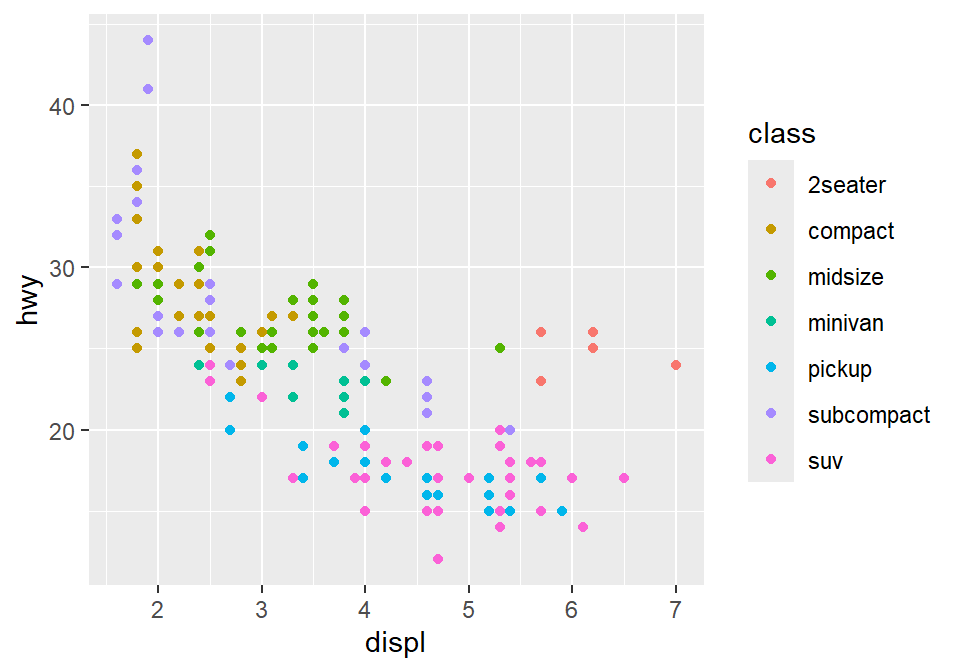
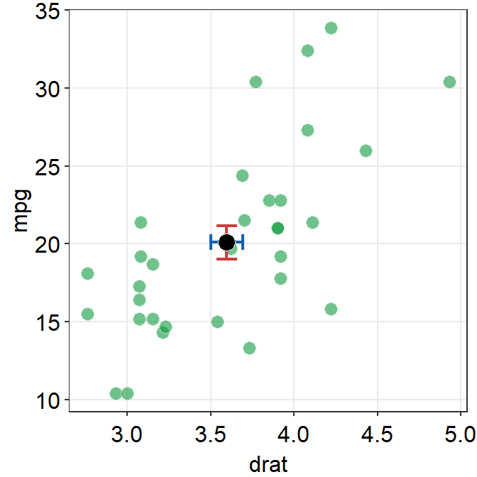
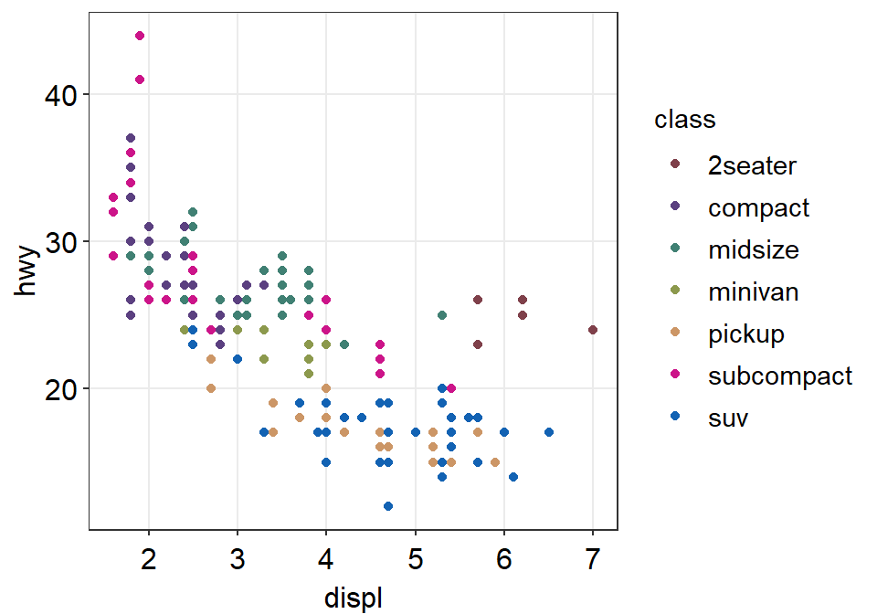
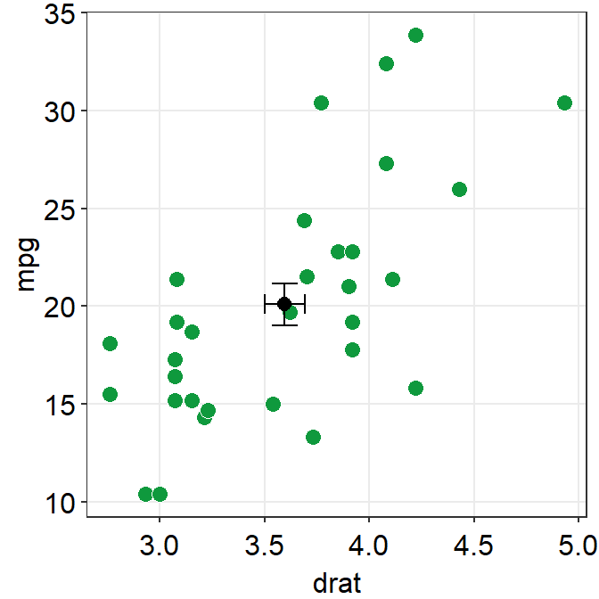

Chapter 3 Correlation plot
Load these packages by typing the codes below.
library(tidyverse) # it has ggplot2 package
library(cowplot) # it allows you to save figures in .png file
library(smplot)Sample data: mpg
- I will be using an example from the book R for Data Science (https://r4ds.had.co.nz/data-visualisation.html).
- Question: Do cars with large engines use up more fuel than the those with small ones?
- Let’s open mpg, which is a data frame stored in the ggplot2 package.
- mpg contains data about cars in the US. You can type
?mpgfor more information.- displ: the size of the car’s engine in liters
- hwy: fuel efficiency. If it’s high, then the car uses less fuel per distance.
mpg## # A tibble: 234 x 11
## manufacturer model displ year cyl trans drv cty hwy fl class
## <chr> <chr> <dbl> <int> <int> <chr> <chr> <int> <int> <chr> <chr>
## 1 audi a4 1.8 1999 4 auto~ f 18 29 p comp~
## 2 audi a4 1.8 1999 4 manu~ f 21 29 p comp~
## 3 audi a4 2 2008 4 manu~ f 20 31 p comp~
## 4 audi a4 2 2008 4 auto~ f 21 30 p comp~
## 5 audi a4 2.8 1999 6 auto~ f 16 26 p comp~
## 6 audi a4 2.8 1999 6 manu~ f 18 26 p comp~
## 7 audi a4 3.1 2008 6 auto~ f 18 27 p comp~
## 8 audi a4 qu~ 1.8 1999 4 manu~ 4 18 26 p comp~
## 9 audi a4 qu~ 1.8 1999 4 auto~ 4 16 25 p comp~
## 10 audi a4 qu~ 2 2008 4 manu~ 4 20 28 p comp~
## # ... with 224 more rows- Notice that some columns and rows are not shown. You can type
View(mpg)to see the entire data frame.
View(mpg)Let’s make some graphs
- Question: Do cars with large engines use up more fuel than the those with small ones?
- To answer our question, we need to plot mpg data. The x-axis should be displ, the y-axis should be hwy.
ggplot(data = mpg) +
geom_point(mapping = aes(x = displ, y = hwy))
- We find that a smaller car has a higher efficiency and that a larger car has a lower efficiency. In other words, we see a negative relationship.
How ggplot works
- When you are making a graph with ggplot2, always begin by typing the function
ggplot().- The data you want to plot is the first argument here. Ex.
ggplot(data = mpg).
- The data you want to plot is the first argument here. Ex.
- However,
ggplot(data = mpg)alone does not create a graph. You will need add (by typing +) more layers, such asgeom_point().geom_point()adds points to your graphs. You will need to specify (or map) x- and y-axes in theaes()function, which means aesthetics. This process is called mapping.- As you might expect, there are other geom functions, such as
geom_bar(),geom_boxplot(),geom_errorbar(). They plot bar graphs, boxplots and error bars, respectively.
- Here is the template for using ggplot2 (copied from R for Data Science).
ggplot(data = <DATA>) +
<GEOM_FUNCTION>(mapping = aes(<MAPPINGS>))Different color of points for each unique group
- You can apply different colors by the class of each car (each car = each row of the mpg data frame).
- Include
classvariable in theaes()function. - This maps the third variable
classinto your graph. aes()means aesthetic (ex. color, shape, etc).
- Include
ggplot(data = mpg) +
geom_point(mapping = aes(x = displ, y = hwy, color = class))
- You can also set different shapes for each group of the data.
ggplot(data = mpg) +
geom_point(mapping = aes(x = displ, y = hwy, shape = class))
- Or size or transparency (not recommended). But you get the idea. Using
aes()in a geom function (ex.geom_point()), you can label different group of points.
# different levels of transparency (alpha) for each group
ggplot(data = mpg) +
geom_point(mapping = aes(x = displ, y = hwy, alpha = class))
# different sizes of the points for each group
ggplot(data = mpg) +
geom_point(mapping = aes(x = displ, y = hwy, size = class))
Different color & shape for each group
- You can also apply different color & shape for each group of the data.
- Exercise: Try it on your own before you look at the code below.
ggplot(data = mpg) +
geom_point(mapping = aes(x = displ, y = hwy, color = class,
shape = class))
Same shape across all groups
- So far, you have put variables such as
shapeandcolorinside the functionaes().- This has enabled you to apply different shape and color for each group.
- If you put the variable for
shape,color,sizeoutside ofaes()in the geom function, then all data points will have the specifiedshape,color, etc even if they are in different groups.
ggplot(data = mpg) +
geom_point(mapping = aes(x = displ, y = hwy,
color = class), shape = 17)
- Notice that the
coloris different for each group because it is inside the functionaes(). However, all the points are triangle because we have typedshape = 17outside the functionaes(). - Exercise: try changing the shape of the points to the circle with the border.

Figure 3.1: image from http://www.sthda.com/english/wiki/ggplot2-point-shapes
Exercise: try changing the shape of the points to the circle with the border.
- When
shape = 19, the shape is the circle without the border. - When
shape = 20, the shape is the small circle without the border. - When
shape = 21, the shape is the circle with the border. - So let’s set
shapeto 21.
ggplot(data = mpg) +
geom_point(mapping = aes(x = displ, y = hwy, color = class), shape = 21)
- Notice that the border color is different for each group, but not the color that fills the circle.
- Shapes without their borders (15-20) are filled with
color. - Shapes with the border (21-24) are filled with
filland its border colored withcolor. - So let’s change
color = Classtofill = Class.
ggplot(data = mpg) +
geom_point(mapping = aes(x = displ, y = hwy, fill = class), shape = 21)
How do we draw the best-fit line of the graph?
- Here is our graph.
ggplot(data = mpg) +
geom_point(mapping = aes(x = displ, y = hwy))
- There seems to be a negative relationship.
- How do we draw the best-fit line of the graph’s negative relationship?
- Use another geom function
geom_smooth().
ggplot(data = mpg) +
geom_smooth(mapping = aes(x = displ, y = hwy))## `geom_smooth()` using method = 'loess' and formula 'y ~ x'
geom_point() + geom_smooth()
- Now let’s combine geom_point() + geom_smooth() into one graph.
ggplot(data = mpg) +
geom_point(mapping = aes(x = displ, y = hwy)) +
geom_smooth(mapping = aes(x = displ, y = hwy))## `geom_smooth()` using method = 'loess' and formula 'y ~ x'
ggplot()acts as a system where you can add multiplegeomobjects, such asgeom_point()andgeom_smooth().- You can add multiple layers of geom in a single plot, like shown here.
ggplot()and at least one geom function are necessary to draw a graph.ggplot()alone does not draw a graph. Try it on your own.
ggplot(data = mpg)
Writing shorter codes
ggplot(data = mpg) +
geom_point(mapping = aes(x = displ, y = hwy)) +
geom_smooth(mapping = aes(x = displ, y = hwy))- Notice that we have typed
mapping = aes(x = displ, y = hwy)twice. This is repetitive. - If you type the
mappingargument inggplot(), you won’t need to type them anymore in the subsequentgeomfunctions.
ggplot(data = mpg, mapping = aes(x = displ, y = hwy)) +
geom_point() +
geom_smooth()## `geom_smooth()` using method = 'loess' and formula 'y ~ x'
This is exactly the same as the previous graph. In both cases, the mapping has been set so that the x-axis is
displand the y-axis ishwyin bothgeom_point()andgeom_smooth().Now let’s apply different color of points and the fit the line for each group.
ggplot(data = mpg, mapping = aes(x = displ, y = hwy, color = class)) +
geom_point() +
geom_smooth()## `geom_smooth()` using method = 'loess' and formula 'y ~ x'
- Okay, this is extremely messy and probably a bad idea.
- You might have gotten
warningsbut you can usually ignore them.
- You might have gotten
- Let’s plot the best-fit line across all groups (i.e., one best-fit line) but apply different color for each class (i.e., many colors).
- To do so, type
color = classin geom_point, notggplot(). This enables you to specify that you will apply different color for each class only ingeom_point()but not ingeom_smooth().
ggplot(data = mpg, mapping = aes(x = displ, y = hwy)) +
geom_point(aes(color = class)) +
geom_smooth()## `geom_smooth()` using method = 'loess' and formula 'y ~ x'
Let’s make the plots prettier using smplot.
- Although the default theme of ggplot2 graphs is clean, there are some things that I do not like:
- The fonts are too small.
- The grey background is distracting.
- There are too many grids.
ggplot(data = mpg, mapping = aes(x = displ, y = hwy, color = class)) +
geom_point() 
- Let’s make this graph prettier by using functions from smplot.
- In this example, let’s use
sm_corr_theme(). I’ve made this function as a theme suitable for correlation plots. - Disclaimer: smplot package has been built based on my preference.
- smplot is not necessary to make a ggplot graph or change its style. It is possible to change every aspect of the graph with ggplot2 but this requires about 8-20 lines of codes (based on my experience). Instead, smplot function does so in one line of code.
- In this example, let’s use
ggplot(data = mpg, mapping = aes(x = displ, y = hwy, color = class)) +
geom_point() +
sm_corr_theme()
- Now let’s remove the border within
sm_corr_theme()by settingborders = FALSE.
ggplot(data = mpg, mapping = aes(x = displ, y = hwy, color = class)) +
geom_point() +
sm_corr_theme(borders = FALSE)
- Exercise: You can also set
borders = TRUEand see what happens.
ggplot(data = mpg, mapping = aes(x = displ, y = hwy, color = class)) +
geom_point() +
sm_corr_theme(borders = TRUE)You might notice that borders come back. This is exactly what happens when you do not include
bordersargument insm_corr_theme(). This is becausesm_corr_theme()is set toborders = TRUEas default.I think the one with the border looks better.
You can also remove the legend by setting
legends = FALSEinsm_corr_theme().
ggplot(data = mpg, mapping = aes(x = displ, y = hwy, color = class)) +
geom_point() +
sm_corr_theme(legends = FALSE)
- Exercise Set
legends = TRUEand see what happens. Type?sm_corr_themeto see why legends appear without directly writinglegends = TRUE.
ggplot(data = mpg, mapping = aes(x = displ, y = hwy, color = class)) +
geom_point() +
sm_corr_theme(legends = TRUE)- However, in this case, I think we need a legend because there are many classes.
Positive relationship between x- and y-axes
- Let’s plot another scatterplot using mtcars data.
- Set the x-axis with drat and y-axis with mpg.
- Since you are making a scatterplot, you will need to use
geom_point(). - Set the size of all points to 3 by typing
size = 3. - Set the shape of all points to the circle with a border by typing
shape = 21. - Set the filled color of all points to green by typing
fill = '#0f993d'. - Set the border color to white by typing
color = 'white'.- Since
shape = 21refers to the circle with a border,fillis the color that fills the points andcoloris the border color.
- Since
ggplot(data = mtcars, mapping = aes(x = drat, y = mpg)) +
geom_point(shape = 21, fill = '#0f993d', color = 'white',
size = 3) 
drat and mpg have a positive relationship.
Now let’s make it pretty by adding
sm_corr_theme().
ggplot(data = mtcars, mapping = aes(x = drat, y = mpg)) +
geom_point(shape = 21, fill = '#0f993d', color = 'white', size = 3) +
sm_corr_theme()
- You can remove borders too by setting
borders = FALSEinsm_corr_theme().
ggplot(data = mtcars, mapping = aes(x = drat, y = mpg)) +
geom_point(shape = 21, fill = '#0f993d', color = 'white', size = 3) +
sm_corr_theme(borders = FALSE)